Ombouw wisselcomplex Aveling deel 11 met foto's van 22 mei...
- woensdag 10 december 2008 21:17
- Geschreven door Joachim
Zo snel nóg een Aveling-editie? Menig bezoeker zal je voorgegaan zijn met deze gedachte. Aangezien we graag de vorderingen van dag en nacht willen updaten rond de Aveling, kan het wel gebeuren dat we de komende dagen véél Aveling-nieuws hebben. We vragen je hiervoor begrip. Als er ánder belangrijk nieuws is, dan komt dat er uiteraard ook op!
De derde rail ligt er voor een groot gedeelte en is door middel van de gele overkapping al afgeschermd. Er is voor gekozen om, waar mogelijk, de oude derde rail te gebruiken, deze was immers al ingereden en voorkomt zo slijtage aan de stroomafnemers van de rijtuigen. Ook de wisselbevestigen zijn op de wissels klaar en zijn al getest, het blijkt naar wens te werken. Hieronder weer een paar foto's van gisteren, met dank aan Jeepie:
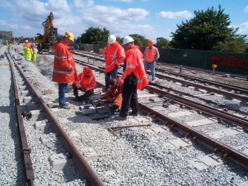
Hier wordt de wisseltong aan de wisselmotor bevestigd. Dit karwei doet Cegelec. Overigens is dit het wissel aan de kant van station Zalmplaat. Helemaal links de derde rail, die straks weer opgehangen wordt.
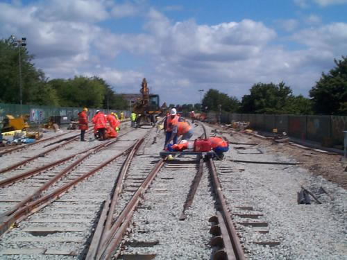
Het wisselcomplex is helemaal 'gestopt' door de Strukton-stopmachine, daarvan zometeen een statieportretje.
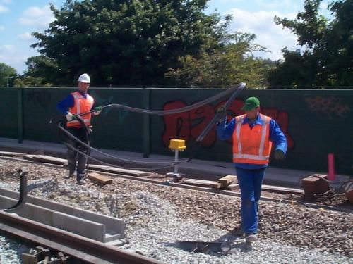
Omdat in een wisselcomplex niet altijd met ATB-zenders kan worden gewerkt in sommige secties, wordt er een lus gekoppeld aan de ATB-zender. Zo kan de trein het signaal opvangen. De lussen zijn te vergelijken met AHOB-lussen.
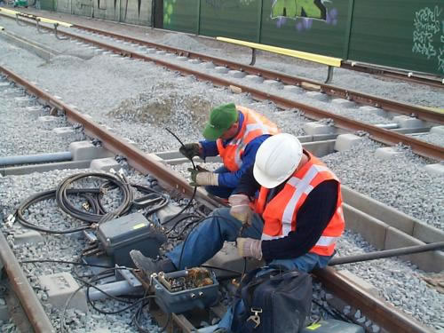
Bevestiging van een spoortrafo en ATB-pot...

De derde rail ligt er al, ook op spoor 15...
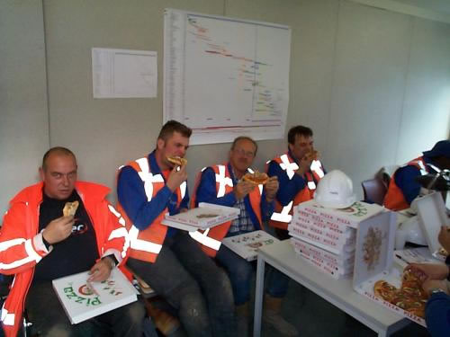
Het is niet duidelijk of de pizza gebracht is door een auto of een brommer... Dat het veel pizza's waren, dat is duidelijk...
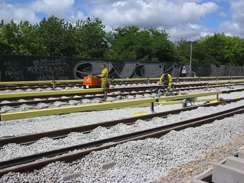
Op spoor 15 wordt de derde rail gelast en de lasnaad wordt erafgehaald, zodat de stroomafnemer er soepel onderdoor kan lopen.
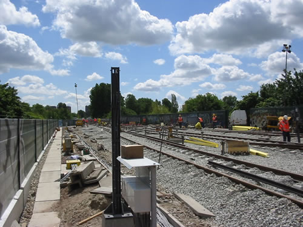
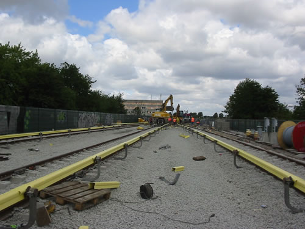
Stukjes isoleerkap en verderop de railshovel, die natuurlijk voor de meeste karweien nog steeds nodig is...
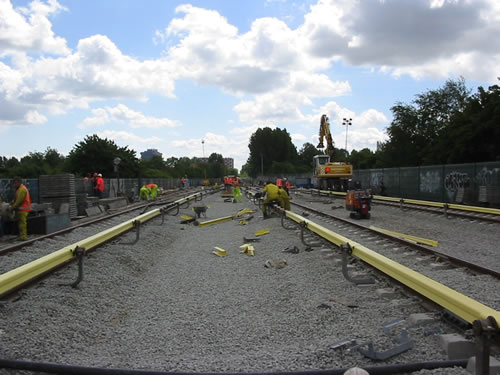
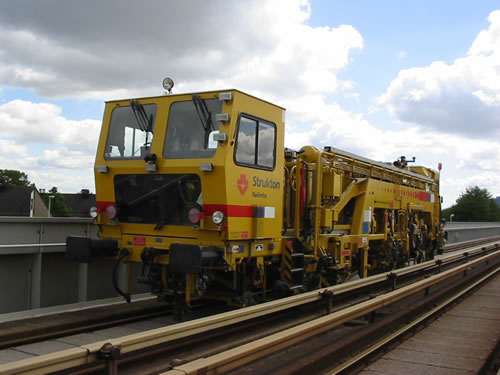
Dit is de stopmachine van Strukton, de machine stond vlak voor het station van Hoogvliet, en zorgt ervoor dat de rails recht komt te liggen en dat waar nodig grind gestort wordt.
Centrale Verkeersleiding
Wat ziet de Centrale Verkeersleiding op de beeldschermen en op het wandtableau? Zien zij nog de oude situatie of helemaal nog niks? De verkeersleiders kunnen al zien wat er gebeurd op de Aveling, de nieuwe spoorindeling zit ook al op het wandtableau.

De Aveling in de computer, de trein rechtsonder (9213ZA - dienstwagen 921, 3 wagens, Zalmplaat - Akkers) keert op Zalmplaat. De bezetmelding erboven is gesimuleerd. De bezetmelding wordt gesimuleerd in de relaisruimte, en zo kan bekeken worden of de spoorbezetmeldingen al werken. Dit gebeurd met de afstandsbediening (in de relaisruimte) en daarom staat er ook in het rode vakje 'AfstB' als markering voor de treindienstleiding.
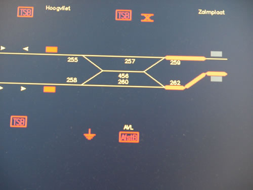
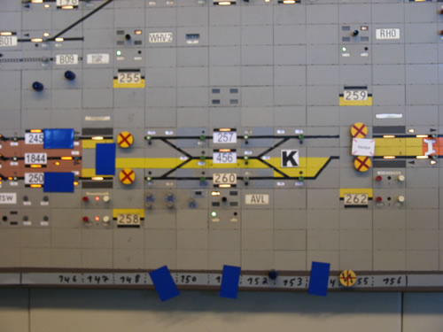
En zo ziet het er uit op het wandtableau. De rode kruisen op de gele magneetjes geven aan waar er geen stroom meer op de baan staat.